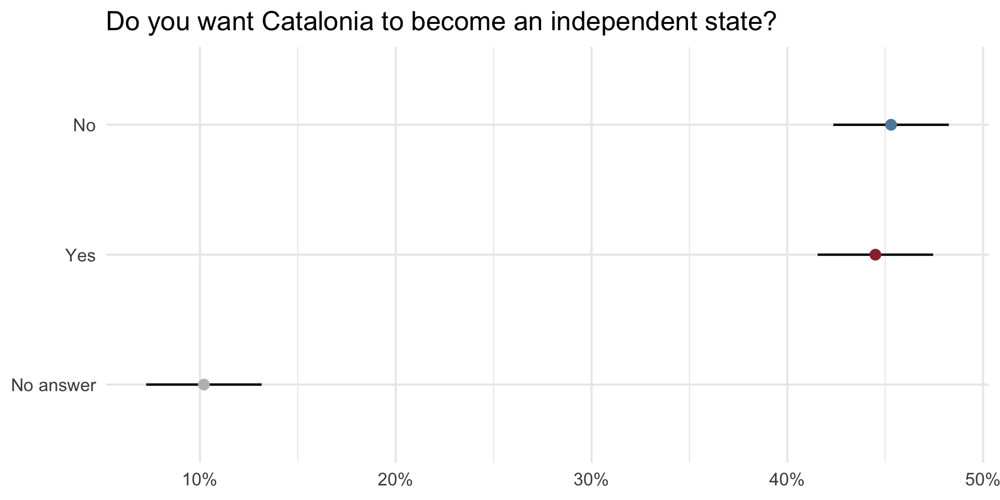
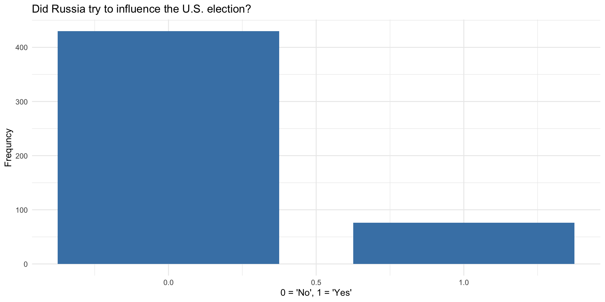
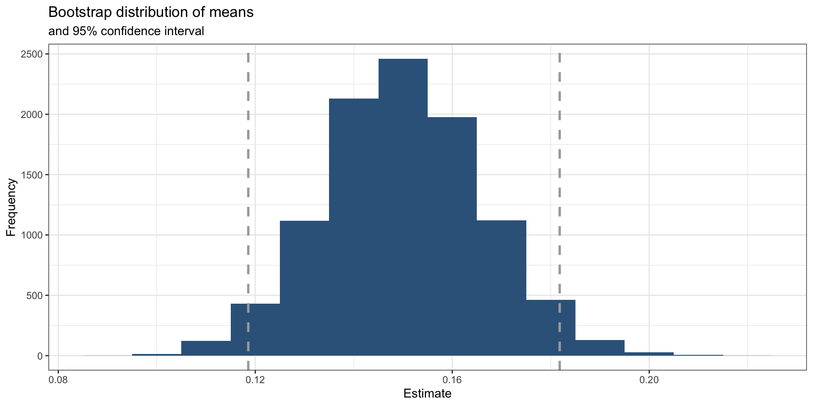

Sampling and Uncertainty
June 1, 2026
Sampling
- Sampling the act of selecting a subset of individuals, items, or data points from a larger population to estimate characteristics or metrics of the entire population
- Versus a census, which involves gathering information on every individual in the population
- Why would you want to use a sample?
Sampling Activity
What proportion of all milk chocolate M&Ms are blue?
- M&Ms has a precise distribution of colors that it produces in its factories
- M&Ms are sorted into bags in factories in a fairly random process
- Each bag represents a sample from the full population of M&Ms
Activity
- Use the virtual bag sampler on the next slide
- Click Open a New Bag three or four times — each click is one sample from the M&M population
- Record your proportion estimates (the app tracks them for you)
- Add your estimates to the class Google Sheet — we will analyze the class data together
Virtual M&M Bag Sampler
#| '!! shinylive warning !!': |
#| shinylive does not work in self-contained HTML documents.
#| Please set `embed-resources: false` in your metadata.
#| standalone: true
#| viewerHeight: 540
library(shiny)
true_prop_blue <- 0.24
mm_probs <- c(blue = 0.24, orange = 0.20, green = 0.16,
yellow = 0.14, red = 0.13, brown = 0.13)
bag_size <- 56
ui <- fluidPage(
fluidRow(
column(4,
wellPanel(
actionButton("open_bag", "Open a New Bag",
class = "btn-primary btn-lg",
style = "width:100%; margin-bottom:12px;"),
conditionalPanel("input.open_bag > 0",
h4("Your Estimates"),
tableOutput("estimates_table"),
hr(),
strong(textOutput("running_mean"))
)
)
),
column(8,
plotOutput("bag_plot", height = "270px"),
conditionalPanel("input.open_bag > 1",
plotOutput("hist_plot", height = "190px")
)
)
)
)
server <- function(input, output, session) {
estimates <- reactiveVal(numeric(0))
current_bag <- reactiveVal(NULL)
observeEvent(input$open_bag, {
bag <- sample(names(mm_probs), size = bag_size, replace = TRUE,
prob = mm_probs)
current_bag(bag)
estimates(c(estimates(), mean(bag == "blue")))
})
output$bag_plot <- renderPlot({
req(current_bag())
colors <- current_bag()
n <- length(colors)
ncols <- 8
nrows <- ceiling(n / ncols)
x <- rep(1:ncols, length.out = n)
y <- rep(nrows:1, each = ncols)[1:n]
prop_blue <- mean(colors == "blue")
par(mar = c(1, 1, 3, 1))
plot(x, y,
xlim = c(0.5, ncols + 0.5), ylim = c(0.5, nrows + 0.5),
type = "n", axes = FALSE, xlab = "", ylab = "",
main = sprintf("Bag #%d — Proportion Blue: %.3f (%d / %d)",
input$open_bag, prop_blue,
sum(colors == "blue"), n))
for (i in seq_along(colors)) {
symbols(x[i], y[i], circles = 0.35,
fg = if (colors[i] == "blue") "navy" else "gray60",
bg = colors[i],
add = TRUE, inches = FALSE,
lwd = if (colors[i] == "blue") 2.5 else 1)
}
})
output$estimates_table <- renderTable({
req(length(estimates()) > 0)
e <- estimates()
data.frame(Bag = paste0("#", seq_along(e)),
`Prop. Blue` = round(e, 3), check.names = FALSE)
}, striped = TRUE, bordered = TRUE, spacing = "s")
output$running_mean <- renderText({
e <- estimates()
req(length(e) > 0)
sprintf("Mean of %d bags: %.3f", length(e), mean(e))
})
output$hist_plot <- renderPlot({
req(length(estimates()) > 1)
e <- estimates()
par(mar = c(4, 4, 3, 1))
hist(e,
breaks = seq(0, 0.65, by = 0.05),
col = "steelblue3", border = "white",
xlim = c(0, 0.6),
xlab = "Proportion Blue", ylab = "Count",
main = "Your sampling distribution so far",
xaxt = "n")
axis(1, at = seq(0, 0.6, by = 0.1),
labels = paste0(seq(0, 60, by = 10), "%"))
abline(v = true_prop_blue, col = "red", lty = 2, lwd = 2)
text(true_prop_blue + 0.02, par("usr")[4] * 0.85,
"True: 24%", col = "red", adj = 0, cex = 0.9)
})
}
shinyApp(ui, server)Let’s Analyze the Data
We will use the googlesheets4 package to pull the data into R so be sure to install it.
Calculate Some Summary Stats
Now Let’s Make a Histogram
Discussion
- What is the histogram/distribution showing?
- Why do some bag of M&Ms have proportions of blues that are higher and lower than the number you gave above?
- How do our estimates relate to the actual percentage of blue M&Ms manufactured?
- What do you think would happen if we kept adding more samples to the distribution?
What did we just do?
- We wanted to say something about the population of M&Ms
- The parameter we care about is the proportion of M&Ms that are blue
- It would be impossible to conduct a census and to calculate the parameter
- We took a sample from the population and calculated a sample statistic
- statistical inference: act of making a guess about a population using information from a sample
What did we just do?
- We completed this task many times
- This produced a sampling distribution of our estimates
- There is a distribution of estimates because of sampling variability
- Due to random chance, one estimate from one sample can differ from another
- These are foundational ideas for statistical inference that we are going to keep building on
Zooming Out
Target Population
In data analysis, we are usually interested in saying something about a Target Population.
- What proportion of adult Russians support the war in Ukraine?
- Target population: adult Russians (age 18+)
- How many US college students check social media during their classes?
- Target population: US college students
- What percentage of M&Ms are blue?
- Target population: all of the M&Ms
Sample
In many instances, we have a Sample
- We cannot talk to every Russian
- We cannot talk to all college students
- We cannot count all of the M&Ms
Parameters vs Statistics
- The parameter is the value of a calculation for the entire target population
- The statistic is what we calculate on our sample
- We calculate a statistic in order to say something about the parameter
Inference
- Inference–The act of “making a guess” about some unknown
- Statistical inference–Making a good guess about a population from a sample
- Causal inference–Did X cause Y? [topic for later classes]
Uncertainty
On December 19, 2014, the front page of Spanish national newspaper El País read “Catalan public opinion swings toward ‘no’ for independence, says survey”.1

The probability of the tiny difference between the ‘No’ and ‘Yes’ being just due to random chance is very high.1

Characterizing Uncertainty
- We know from previous section that even unbiased procedures do not get the “right” answer every time
- We also know that our estimates might vary from sample to sample due to random chance
- Therefore we want to report on our estimate and our level of uncertainty
Characterizing Uncertainty
- With M&Ms, we knew the population parameter
- In real life, we do not!
- We want to generate an estimate and characterize our uncertainty with a range of possible estimates
Solution: Create a Confidence Interval
- A plausible range of values for the population parameter is a confidence interval.
- 95 percent confidence interval is standard
- We are 95% confident that the parameter value falls within the range given by the confidence interval
Ways to Estimate
- Take advantage of Central Limit Theorem to estimate using math
- Use simulation, bootstrapping
With Math…
\[CI = \bar{x} \pm Z \left( \frac{\sigma}{\sqrt{n}} \right)\]
- \(\bar{x}\) is the sample mean,
- \(Z\) is the Z-score corresponding to the desired level of confidence
- \(\sigma\) is the population standard deviation, and
- \(n\) is the sample size
This part here represents the standard error:
\[\left( \frac{\sigma}{\sqrt{n}} \right)\]
- Standard deviation of the sampling distribution
- Characterizes the spread of the sampling distribution
- The bigger this is the bigger the CIs are going to be
Central Limit Theorem
\[CI = \bar{x} \pm Z \left( \frac{\sigma}{\sqrt{n}} \right)\]
- This way of doing things depends on the Central Limit Theorem
- As sample size gets bigger, the spread of the sampling distribution gets narrower
- The shape of the sampling distributions becomes more normally distributed
\[CI = \bar{x} \pm Z \left( \frac{\sigma}{\sqrt{n}} \right)\]
This is therefore a parametric method of calculating the CI. It depends on assumptions about the normality of the distribution.
Bootstrapping
- Pulling oneself up from their bootstraps …
- Use the data we have to estimate the sampling distribution
- We call this the bootstrap distribution
- This is a nonparametric method
- It does not depend on assumptions about normality
Bootstrap Process
- Take a bootstrap sample - a random sample taken with replacement from the original sample, of the same size as the original sample
- Calculate the bootstrap statistic - a statistic such as mean, median, proportion, slope, etc. computed on the bootstrap samples
- Repeat steps (1) and (2) many times to create a bootstrap distribution - a distribution of bootstrap statistics
- Calculate the bounds of the XX% confidence interval as the middle XX% of the bootstrap distribution (usually 95 percent confidence interval)
Russia
What Proportion of Russians believe their country interfered in the 2016 presidential elections in the US?
- Pew Research survey
- 506 subjects
- Data available in the
openintropackage
For this example, we will use data from the Open Intro package. Install that package before running this code chunk.
Let’s use mutate() to recode the qualitative variable as a numeric one…
Now let’s calculate the mean and standard deviation of the try_influence variable…
And finally let’s draw a bar plot…

Bootstrap with tidymodels
Install tidymodels before running this code chunk…
#install.packages("tidymodels")
library(tidymodels)
set.seed(66)
boot_dist <- russiaData |>
# specify the variable of interest
specify(response = try_influence) |>
# generate 10000 bootstrap samples
generate(reps = 10000, type = "bootstrap") |>
# calculate the mean of each bootstrap sample
calculate(stat = "mean")
glimpse(boot_dist)Rows: 10,000
Columns: 2
$ replicate <int> 1, 2, 3, 4, 5, 6, 7, 8, 9, 10, 11, 12, 13, 14, 15, 16, 17, 1…
$ stat <dbl> 0.1146245, 0.1442688, 0.1343874, 0.1877470, 0.1521739, 0.138…Calculate the mean of the bootstrap distribution (of the means of the individual draws)…
Calculate the confidence interval. A 95% confidence interval is bounded by the middle 95% of the bootstrap distribution.
Create upper and lower bounds for visualization.
Visualize with a histogram
ggplot(data = boot_dist, mapping = aes(x = stat)) +
geom_histogram(binwidth =.01, fill = "steelblue4") +
geom_vline(xintercept = c(lower_bound, upper_bound), color = "darkgrey", linewidth = 1, linetype = "dashed") +
labs(title = "Bootstrap distribution of means",
subtitle = "and 95% confidence interval",
x = "Estimate",
y = "Frequency") +
theme_bw()
Or use the infer package
Or use the infer package
Or use the infer package
Interpret the confidence interval
The 95% confidence interval was calculated as (lower_bound, upper_bound). Which of the following is the correct interpretation of this interval?
(a) 95% of the time the percentage of Russian who believe that Russia interfered in the 2016 US elections is between lower_bound and upper_bound.
(b) 95% of all Russians believe that the chance Russia interfered in the 2016 US elections is between lower_bound and upper_bound.
(c) We are 95% confident that the proportion of Russians who believe that Russia interfered in the 2016 US election is between lower_bound and upper_bound.
(d) We are 95% confident that the proportion of Russians who supported interfering in the 2016 US elections is between lower_bound and upper_bound.
Your Turn!
- Change the
repsargument in thegenerate()function to something way smaller, like 100. What happens to your estimates? - Try progressively higher numbers. What happens to your estimates as the number of reps increases?
Bias vs Precision
- A procedure is unbiased if it generates the “right” answer, on average
- Precision refers to variability: procedures with less sampling variability will be more precise
- all else equal, a greater sample size will increase precision
- When we increase the sample size (number of reps), we increase precision
- As a result our confidence interval will be narrower
Why did we do these simulations?
- They provide a foundation for statistical inference and for characterizing uncertainty in our estimates
- The best research designs will try to maximize or achieve good balance on bias vs precision